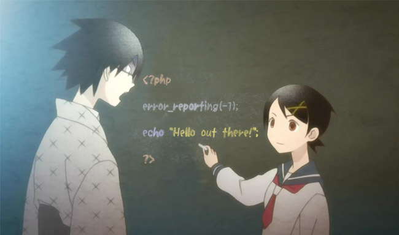
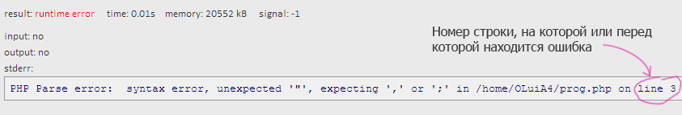
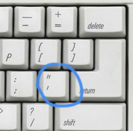

Начало
Требуемые знания: умение включать компьютер и пользоваться браузером. Ноутбук/айпад/планшет/смартфон тоже подходят, если в них есть интернет.
Зачем это нужно? На PHP (после того, как ты дойдешь до определенного уровня) можно делать сайты и онлайн-игры, вконтакте и фейсбук написаны на нем.
Немного о PHP
Что такое PHP? Язык программирования.
Что такое скрипт (программа)? Это текст, в котором записана последовательность команд. Программист пишет скрипт, а интерпретатор PHP читает написанный скрипт и выполняет записанные в нем команды (собственно потому он и называется интерпретатором). Иногда текст скрипта называют код. Что может делать скрипт? Да все, что угодно. Профит!
Где взять интерпретатор PHP? Надо что-то настраивать и устанавливать? Нет, пока мы обойдемся без этого и будем запускать программы с помощью сайта ideone.
Каким образом пишется программа? Любым, который нравится программисту. Так как код - это обычный текст, то можно использовать даже блокнот, однако делать так не стоит. Лучше скачать продвинутый редактор вроде Notepad++ для Windows (бесплатно) или Sublime Text (платно). Если тебе нужно еще больше возможностей, можно взять IDE (среду разработки), например Netbeans PHP (бесплатно) или PHPStorm (платно). Продвинутые редакторы подсвечивают код разными цветами, поддерживают автодополнение и содержат много других полезных функций. Для первых уроков хватит сайта ideone.com, но далее стоит скачать и освоить хотя бы Notepad++.
Ideone сломался и не открывается? Используй другие похожие сервисы:
http://phptester.net/
http://codepad.org/
http://www.runphponline.com/
http://sandbox.onlinephpfunctions.com/
https://phpkiss.com/
https://repl.it/languages/php
http://phpfiddle.org/ (сложный).
Итак, заходи на сайт http://ideone.com/ . Там ты можешь набрать свой скрипт, нажать кнопку, и увидеть результат его работы. То, что ты туда вводишь, отправляется на их сервер, интерпретатор PHP исполняет этот код, а тебе выводится результат.
Первая программа
Давай не будем откладывать пpактику в долгий ящик, и сделаем задание, следуя инструкциям на картинке ниже:
Если вместо результата ты видишь сообщения об ошибках, проверь свой код — может, ты кавычку не такую написал или где-то букву пропустил? Сообщения об ошибках выглядят обычно так:
Разберемся, как работает эта программа
В первой и последней строках есть код:
<?php ... ?>
Это специальные маркеры (теги), чтобы отметить начало и конец блока PHP-кода. Интерпретатор выполняет лишь команды,
заключенные внутри них. Если ты забудешь маркер <?php, то твой код не выполнится, а просто
выведется, как есть. Маркер ?> в конце скрипта можно не писать — все равно
же конец, но я написал, чтобы ты знал, что он есть.
Далее идет инструкция error_reporting(-1);. Эта команда включает отображение всех
возможных предупреждений (без нее выводятся не все). Поскольку это уроки для начинающих, то, чем строже
проверяется твой код, тем лучше для тебя — ошибки не останутся незамеченными. Пиши эту команду в начало
всех своих скриптов!
Обрати внимание! После каждой инструкции идет точка с запятой. Её нельзя пропускать. Правила PHP разрешают писать инструкции либо подряд, в одну строчку, либо каждую на новой строке. Если писать все в одну строку, код станет нечитаемым и непонятным, потому пиши каждую инструкцию на отдельной строке.
Кроме этого, в нашей программе есть еще одна инструкция:
echo "Hello out there";
Команда echo просто выводит то, что ей передали — в данном случае строку "Hello out there". Строки в PHP надо заключать в одиночные или двойные кавычки (позже мы узнаем, в чем разница), чтобы отличать их от команд. Не перепутай кавычки с какими-то похожими символами, они (и одиночные, и двойные) расположены на клавише рядом с Enter:
Что еще умеет выводить команда echo?
С ее помощью можно выводить и считать числа, например, так (не забудь точку с запятой в конце строки):
echo (20 + 30) * 5 / 2;
Эта команда напечатает число 125 (можешь проверить:
http://ideone.com/FF7QLs).
В математических выражениях можно использовать скобки (), операторы +,
-, умножение (обозначается звездочкой *), деление
(обозначается слешем /, не перепутай с обратным слешем «\» или вертикальной чертой «|»).
Дробные числа, например, «три с половиной», в программировании пишутся через
точку (а не через запятую): 3.5 .
Еще один оператор, который можно использовать в выражениях — это %, и он обозначает не
«процент», а остаток от деления чисел и используется так:
echo 15 % 6;
Если вдруг ты забыл, что такое остаток от деления: чтобы найти остаток от деления 15 на 6, мы вычитаем
из числа 15 число 6, пока остаток не станет меньше 6. В данном случае, получается ответ 3.
Оператор % используется в таких случаях:
- Чтобы найти одну или несколько последних цифр числа, можно взять остаток от деления
на 10, 100, 1000, и т.д:
echo 17856 % 100выведет 56. - Чтобы узнать четное число или нет, можно взять остаток от деления на 2: четные числа дают 0, а нечетные 1 в остатке.
Надеюсь, ты понял, как работает echo. Математика закончилась, давай почитаем про
сервера.
А как PHP используется на сайтах?
Если кратко: когда пользователь набирает у себя в браузере адрес сайта, например, http://example.com, браузер отправляет на сервер (на котором работает сайт) специальный HTTP-запрос и там запускается PHP-скрипт. Скрипт выводит текст на языке HTML, он отправляется в браузер и тот отображает его в виде красивой странички. Если подробнее — смотри картинку ниже.
Вообще, PHP скрипты можно использовать не только на сервере. Можно, например, скачать и установить PHP на компьютер и запускать скрипт в командной строке (это такое черное окошко, в котором можно набирать команды и которое в Windows можно вызвать, набрав Пуск→Выполнить→cmd . А на маках и linux оно называется «терминал»).

Где прочесть официальный мануал на русском по PHP?
http://php.net/manual/ru/langref.php без смс и регистрации
В этом мануале полное описание правил языка, команд и функций от авторов PHP. Заучивать мануал наизусть, естественно, не надо, просто надо знать его адрес и в случае каких-то сомнений прояснять с его помощью непонятные моменты.
-----
Куда вводить код? Что надо скачать? Читай первый урок.
Есть вопросы? Задай гуглу или автору.
Нравится урок? Лайкай, репости, приглашай друзей, пости котов и Канако, шли добра, решай задачи, помогай новичкам! Кнопок для лайка нет, кто хочет зарепостить, всегда может сделать это ручками.
Как связаться с автором? Я хочу переодеть его в платье школьницы и жениться на нем. Ящик codedokode (кот) gmail.com ждет ваших писем. А вконтактик и фейсбучек ждут ваших лайков. Но ответ на банальные вопросы лучше искать в Гугле или на stackoverflow.
Я решил задачку!!! Молодец, делай следующий урок
Ideone не работает!11 Ну так открой Гугл и найди сайты вроде https://repl.it/languages/php , http://phptester.net/ , http://sandbox.onlinephpfunctions.com/ , http://codepad.org/ или http://www.runphponline.com/ . Не ленись.
Почему так много рекламы? Всю рекламу на сайте ставит юкоз (бесплатный хостинг же), а не я.
На сайте установлена система Google Analytics (и еще несколько аналогичных систем от юкоза). Данные о твоем IP-адресе, посещаемых страницах, времени посещения отправляются в Google Corporation, США. Хочу знать, кто и зачем сюда заходит. Поверь, другие сайты делают точно так же. Все сайты пишут логи.